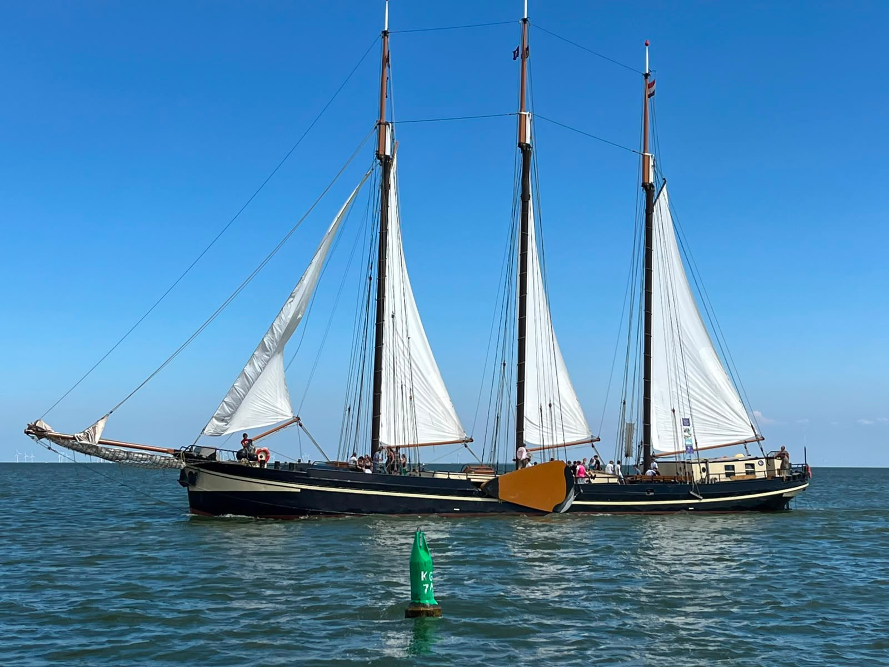
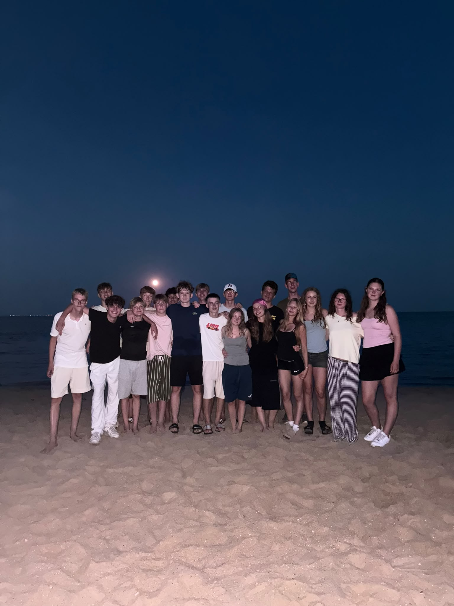
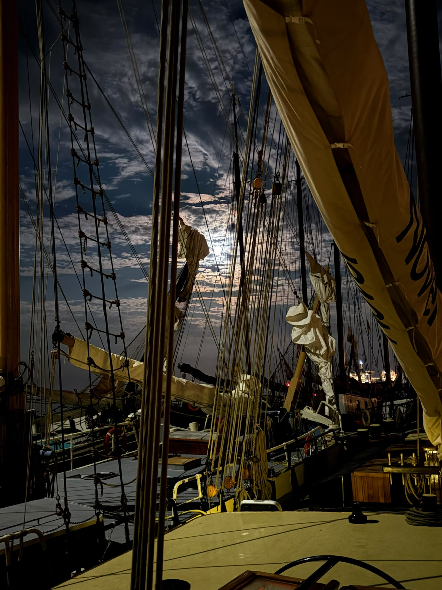
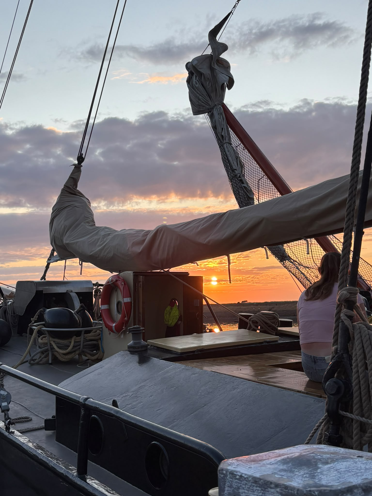
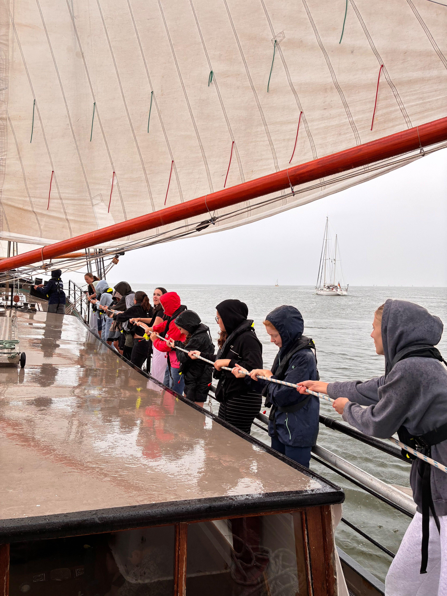
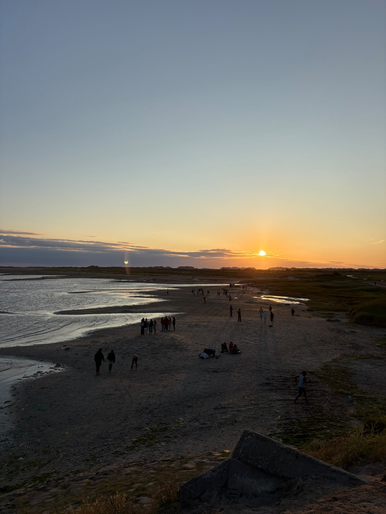
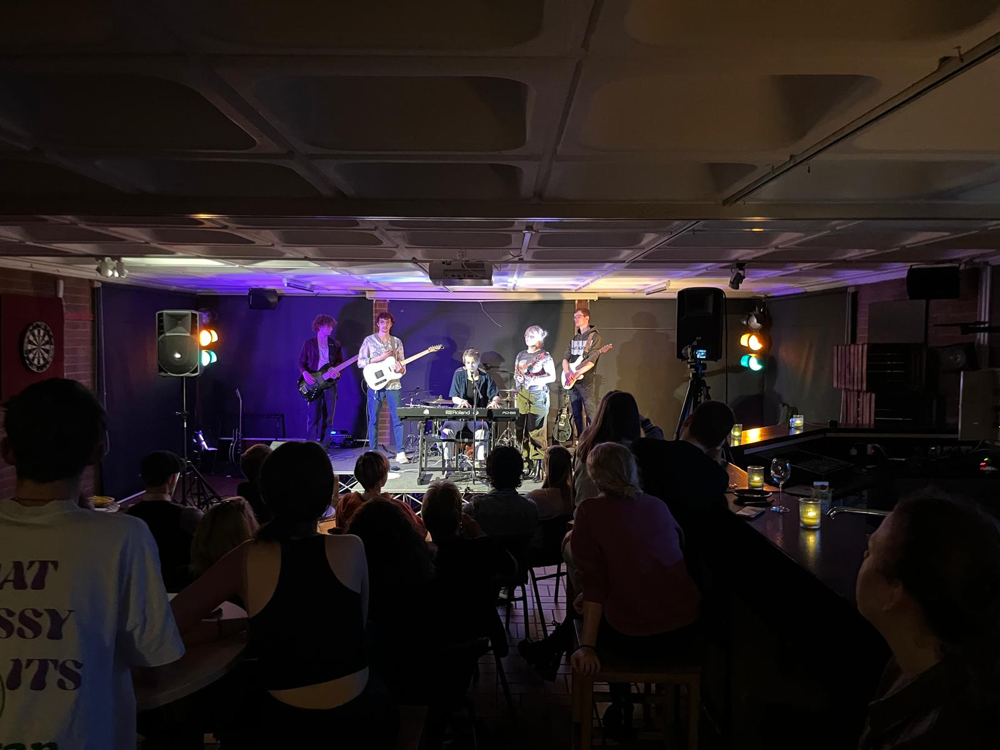

Berichte, Fotos und News aus dem Klärwerk & Choice – immer auf dem Laufenden!
Hier findest du aktuelle Berichte über Veranstaltungen, Freizeiten und besondere Momente aus dem Klärwerk und Choice. Schau regelmäßig vorbei – es gibt immer etwas Neues zu entdecken!
Vom 25.07.2026 bis 31.07.2026 waren wir mit 35 Jugendlichen auf großer Fahrt! Bei unserer diesjährigen Segelfreizeit haben wir gemeinsam das Segeln gelernt, neue Freundschaften geschlossen und unvergessliche Momente erlebt. Das Wetter spielte mit, die Stimmung war fantastisch – und der Teamgeist war spürbar!
Besonders beeindruckend war unser Aufenthalt auf Terschelling. Alle Teilnehmenden konnten am Ende eigenständig das Boot manövrieren – eine tolle Leistung! Wir freuen uns schon auf die nächste gemeinsame Abenteuer.






Am 28.Juni.2026 fand unser diesjähriger Open Stage Abend im Klärwerk statt. Viele talentierte Musikerinnen und Musiker haben die Bühne gerockt – von Rock über Pop bis hin zu eigenen Kompositionen war alles dabei!
Die Atmosphäre war einzigartig und das Publikum hat begeistert mitgemacht. Ein großes Dankeschön an alle Teilnehmenden und Helfer, die diesen Abend so besonders gemacht haben!
